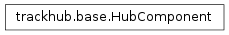

trackhub.base.HubComponent¶

-
class
trackhub.base.HubComponent[source]¶ Bases:
objectBase class for various track hub components. Several methods must be overridden by subclasses.
Methods
__init__()add_child(child)Adds self as parent to child, and then adds child. add_parent(parent)Adds self as child of parent, then adds parent. leaves(cls[, level, intermediate])Returns an iterator of the HubComponent leaves that are of class cls. render()Renders the object to file, returning a list of created files. root([cls, level])Returns the top-most HubComponent in the hierarchy. validate()Runs validation, raising exceptions as needed. -
leaves(cls, level=0, intermediate=False)[source]¶ Returns an iterator of the HubComponent leaves that are of class cls.
If intermediate is True, then return any intermediate classes as well.
-
render()[source]¶ Renders the object to file, returning a list of created files.
Calls validation code, and, as long as each child is also a subclass of
HubComponent, the rendering is recursive.
-
root(cls=None, level=0)[source]¶ Returns the top-most HubComponent in the hierarchy.
If cls is not None, then return the top-most attribute HubComponent that is an instance of class cls.
For a fully-constructed track hub (and cls=None), this should return a a Hub object for every component in the hierarchy.
-